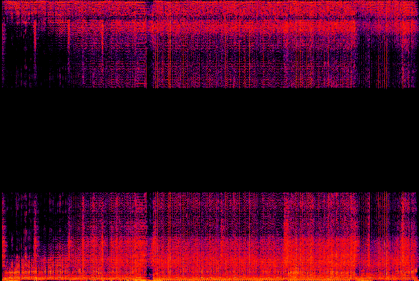

Bibliographie

Théo
- Template de site : https://html5up.net
- Outil de modification du site : https://notepad-plus-plus.org
- Langage utilisé : HTML
- Documentation Rust : https://doc.rust-lang.org/stable
- Documentation interface : https://yew.rs/docs/getting-started/introduction
- Documentation interfance : https://docs.rs/canvas/latest/canvas/
Dylan
- https://academo.org/demos/spectrum-analyzer/
- https://audioalter.com/spectrogram
- https://nsspot.herokuapp.com/imagetoaudio/
- https://docs.rs/image/latest/image/
Uriel
- https://docs.rs/hound/latest/hound/
- https://docs.rs/rustfft/latest/rustfft/
- https://wraycastle.com/fr/blogs/base-de-connaissances/hanning-window